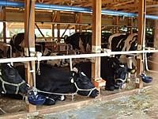
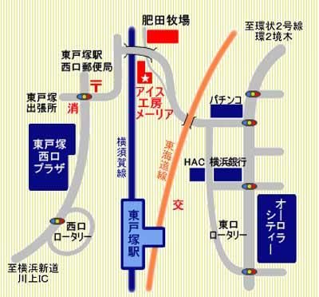
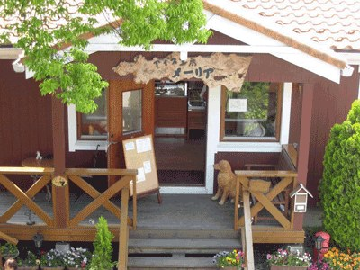
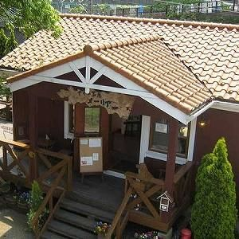
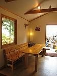
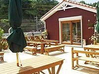
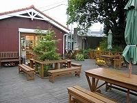

ソフトクリーム
濃く、甘さ控えめ
濃く、甘さを控えた、なめらかなミルク味。牧場の生乳をそのまま感じられる一本です。

メーリアのアイスは、肥田牧場の牛たちの生乳を使い、添加物を極力少なくして作っています。
生乳を使うため、季節や牛の状態によって脂肪分が多少上下します。産後は乳量が多いので成分が下がり、後期には乳量が減って成分が高くなります。分娩の時期を平均化することで、一年を通して高い成分を保っています。
だから、今日のソフトクリームは今日だけの味です。
季節によって変わります。土日祝は1時間早く開きます。
| 期間 | 平日 | 土日祝 | 定休 |
|---|---|---|---|
| 2月〜6月 | 11:00〜18:00 | 10:00〜18:00 | 火曜定休・臨時休業あり |
| 7月〜8月 | 11:00〜19:00 | 10:00〜19:00 | 不定休 |
| 9月〜12月 | 11:00〜18:00 | 10:00〜18:00 | 火曜定休・臨時休業あり |
| 1月 | お休み | 全休 | |
臨時休業はFacebookでお知らせしています。
この営業時間は公式サイトの2017年3月のお知らせをもとにしています。7月〜8月の火曜日の営業については、ページによって記載が異なるため、お出かけ前に店舗へご確認ください。
JR東戸塚駅の東口ロータリーから徒歩約5分。都会の真ん中にある、牧場直営のソフトクリームショップです。大きな木の下のテラスは横須賀線の線路沿いにあり、電車を眺めながらソフトクリームを食べられます。
風の強い日や雨の日は、落ち着いた雰囲気の店内でどうぞ。





